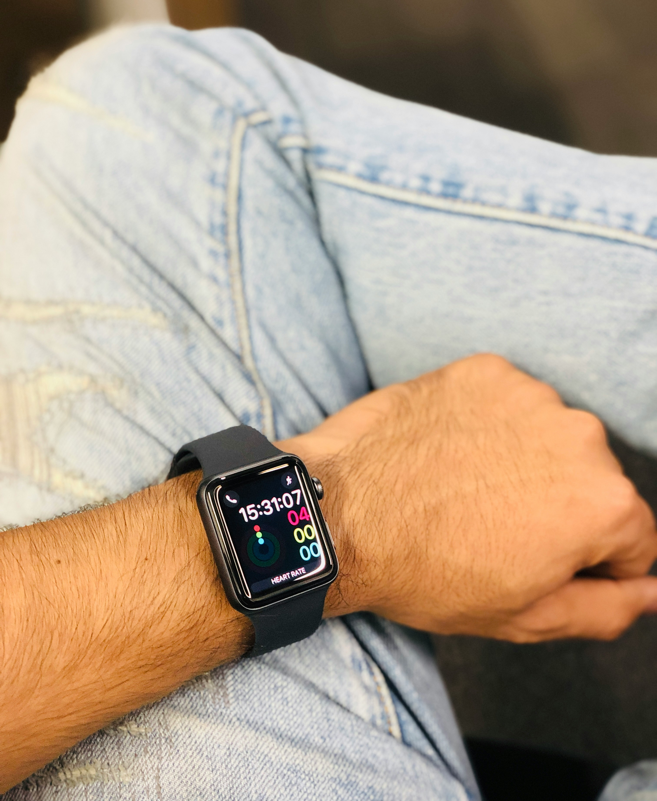
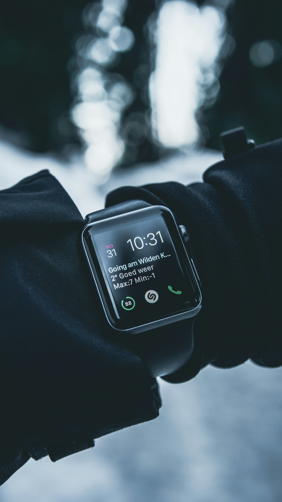
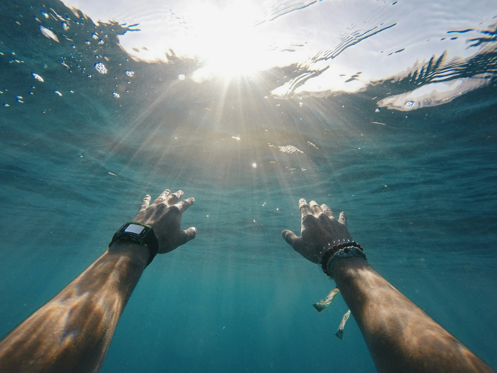

¡No te pierdas la Revolución del Smartwatch!
Monitorea tu salud, recibe notificaciones y mucho más
Monitorea tu salud, recibe notificaciones y mucho más
Monitoreo de salud: Cuida de tu bienestar con datos en tiempo real.
Notificaciones inteligentes: Recibe alertas y notificaciones de tus aplicaciones directamente en tu muñeca.
Resistente al agua: Disfruta de tu smartwatch en cualquier lugar, incluso bajo el agua (resistente hasta 50m)
Gracias al Smartwatch 2.0, ahora puedo seguir mi progreso de salud y mantenerme motivado en todo momento. ¡Es un compañero perfecto para mi vida diaria!"
Carlos Gómezérez
Me encanta cómo el Smartwatch 2.0 me mantiene conectado sin tener que sacar el teléfono. Puedo responder mensajes, recibir alertas y todo desde mi muñeca. ¡Increíble!"
Laura Fernández
Mi Smartwatch 2.0 es mi compañero ideal para el trabajo y el ejercicio. Puedo medir mi ritmo cardíaco y controlar mis pasos durante el día, todo en un solo dispositivo.
Jorge Pérez
Gracias por tu interés. Nos pondremos en contacto pronto.